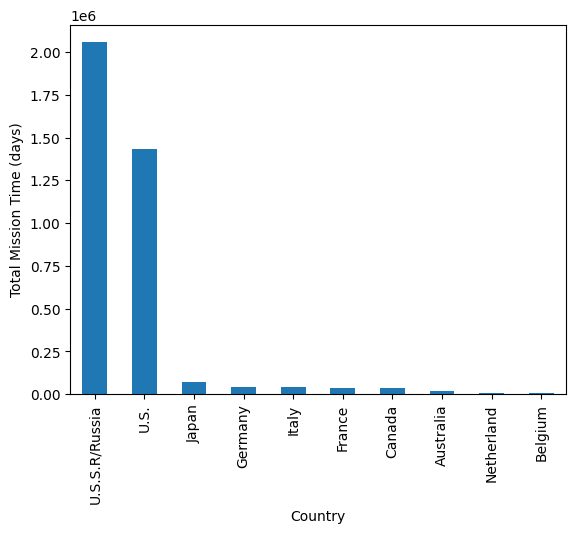
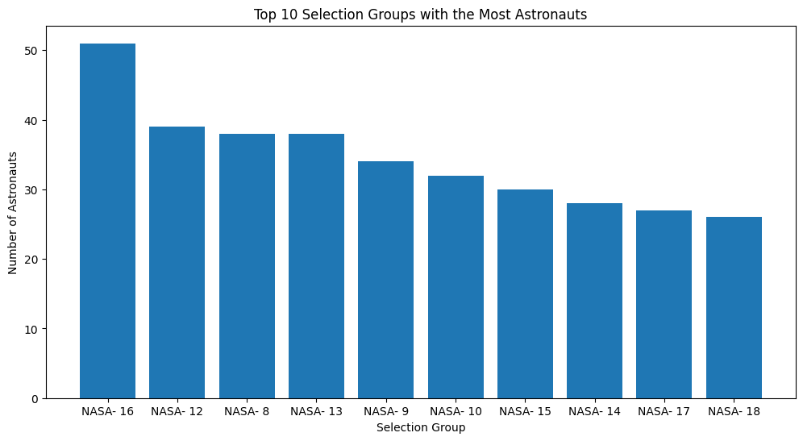

---
title: "Blog Post"
description: "Final Assignment 2"
author: "Angel Coronado"
date: "03/12/2023"
date-modified: "03/12/2023"
---SyntaxError: invalid syntax (1006989908.py, line 1)---
title: "Blog Post"
description: "Final Assignment 2"
author: "Angel Coronado"
date: "03/12/2023"
date-modified: "03/12/2023"
---SyntaxError: invalid syntax (1006989908.py, line 1)In 2022, the Sam Donald released a data set that archived the information on Astronauts from multiple organizations and included data on various astronauts’ occupation, mission hours, military status and other personal information. Note that this data is only updated up until 2020. This data set can be accessed here: * https://corgis-edu.github.io/corgis/python/astronauts/
As an Aerospace Engineering major with an emphasis with Astronautics I have studied various space systems and had to do analysis on many systems that go into space. I find this set interesting as it connects to the concepts I’ve learned in my major courses.
In this project I will attempt to answer the following questions: * What country has the most mission time? * What is the average year of age of astronauts during their mission? * How many astronauts had extravehicular activities (EVAs)? What is the average amount they spent doing EVAs? * What shuttles were used the most?
In the data set I found the following statistics to be of interest: * In the dataset, all astronauts were military connected * The statistics for the mission time were as follows: * Mean: 1052.02 * Median: 261.00 * Mode: 283.00 * 10% Trimmed Mean: 675.58 * This indicates an outlier in th mission time that raised the mean significantly * The EVA time were as follows: * Mean: 3.67 * Median: 0.00 * Mode: 0.00 * 10% Trimmed Mean: 1.93 * This again indicates that there were very few astronauts that performed EVAs and the mean was raised by an outlier
import pandas as pd
import numpy as np
import matplotlib as pltimport requests
from bs4 import BeautifulSoup
import pandas as pd
def pdcorgis(a):
dataset_name = a.lower()
dataset_name = dataset_name.replace(' ', '_')
data_url = f"https://corgis-edu.github.io/corgis/csv/{dataset_name}/"
response = requests.get(data_url)
soup = BeautifulSoup(response.content, "html.parser")
for i in soup.find_all("a"):
if i.has_attr("download"):
csv_file = i["href"]
break
csv_url = f"https://corgis-edu.github.io/corgis/csv/{dataset_name}/{csv_file}"
df = pd.read_csv(csv_url)
return dfastronauts_df = pdcorgis("Astronauts")
astronauts_df.sample()| Profile.Astronaut Numbers.Overall | Profile.Astronaut Numbers.Nationwide | Profile.Name | Profile.Gender | Profile.Birth Year | Profile.Nationality | Profile.Military | Profile.Selection.Group | Profile.Selection.Year | Profile.Lifetime Statistics.Mission count | Mission.Role | Mission.Year | Mission.Name | Mission.Vechicles.Ascent | Mission.Vechicles.Orbit | Mission.Vechicles.Decent | Mission.Durations.Mission duration | Profile.Lifetime Statistics.Mission duration | Mission.Durations.EVA duration | Profile.Lifetime Statistics.EVA duration | |
|---|---|---|---|---|---|---|---|---|---|---|---|---|---|---|---|---|---|---|---|---|
| 520 | 234 | 143 | Melnick, Bruce E. | male | 1949 | U.S. | True | NASA- 13 | 1987 | 2 | MSP | 1992 | STS-49 | STS-49 | STS-49 | STS-49 | 213.0 | 311.0 | 0.0 | 0.0 |
import scipy.stats as stats
# Set the percentage of data to trim
trim_percent = 10
# Loop through each column in the DataFrame
for column in astronauts_df.columns:
# Check if the column is numeric
if pd.api.types.is_numeric_dtype(astronauts_df[column]):
# Compute the mean, median, mode, and trimmed mean of the column
column_mean = astronauts_df[column].mean()
column_median = astronauts_df[column].median()
column_mode = stats.mode(astronauts_df[column])[0][0]
column_trimmed_mean = stats.trim_mean(astronauts_df[column], trim_percent / 100)
# Print the results for the column
print(f"Column: {column}")
print(f"\tMean: {column_mean:.2f}")
print(f"\tMedian: {column_median:.2f}")
print(f"\tMode: {column_mode:.2f}")
print(f"\t{trim_percent}% Trimmed Mean: {column_trimmed_mean:.2f}")Column: Profile.Astronaut Numbers.Overall
Mean: 273.45
Median: 277.00
Mode: 192.00
10% Trimmed Mean: 272.81
Column: Profile.Astronaut Numbers.Nationwide
Mean: 128.32
Median: 110.00
Mode: 1.00
10% Trimmed Mean: 121.52
Column: Profile.Birth Year
Mean: 1951.66
Median: 1952.00
Mode: 1956.00
10% Trimmed Mean: 1952.02
Column: Profile.Military
Mean: 1.00
Median: 1.00
Mode: 1.00
10% Trimmed Mean: 1.00
Column: Profile.Selection.Year
Mean: 1985.50
Median: 1987.00
Mode: 1978.00
10% Trimmed Mean: 1985.95
Column: Profile.Lifetime Statistics.Mission count
Mean: 2.99
Median: 3.00
Mode: 2.00
10% Trimmed Mean: 2.92
Column: Mission.Year
Mean: 1994.54
Median: 1995.00
Mode: 1985.00
10% Trimmed Mean: 1995.19
Column: Mission.Durations.Mission duration
Mean: 1052.02
Median: 261.00
Mode: 283.00
10% Trimmed Mean: 675.58
Column: Profile.Lifetime Statistics.Mission duration
Mean: 2976.40
Median: 938.00
Mode: 565.00
10% Trimmed Mean: 2013.20
Column: Mission.Durations.EVA duration
Mean: 3.67
Median: 0.00
Mode: 0.00
10% Trimmed Mean: 1.93
Column: Profile.Lifetime Statistics.EVA duration
Mean: 10.80
Median: 0.00
Mode: 0.00
10% Trimmed Mean: 7.43/tmp/ipykernel_857/3642324204.py:14: FutureWarning: Unlike other reduction functions (e.g. `skew`, `kurtosis`), the default behavior of `mode` typically preserves the axis it acts along. In SciPy 1.11.0, this behavior will change: the default value of `keepdims` will become False, the `axis` over which the statistic is taken will be eliminated, and the value None will no longer be accepted. Set `keepdims` to True or False to avoid this warning.
column_mode = stats.mode(astronauts_df[column])[0][0]
/tmp/ipykernel_857/3642324204.py:14: FutureWarning: Unlike other reduction functions (e.g. `skew`, `kurtosis`), the default behavior of `mode` typically preserves the axis it acts along. In SciPy 1.11.0, this behavior will change: the default value of `keepdims` will become False, the `axis` over which the statistic is taken will be eliminated, and the value None will no longer be accepted. Set `keepdims` to True or False to avoid this warning.
column_mode = stats.mode(astronauts_df[column])[0][0]
/tmp/ipykernel_857/3642324204.py:14: FutureWarning: Unlike other reduction functions (e.g. `skew`, `kurtosis`), the default behavior of `mode` typically preserves the axis it acts along. In SciPy 1.11.0, this behavior will change: the default value of `keepdims` will become False, the `axis` over which the statistic is taken will be eliminated, and the value None will no longer be accepted. Set `keepdims` to True or False to avoid this warning.
column_mode = stats.mode(astronauts_df[column])[0][0]
/tmp/ipykernel_857/3642324204.py:14: FutureWarning: Unlike other reduction functions (e.g. `skew`, `kurtosis`), the default behavior of `mode` typically preserves the axis it acts along. In SciPy 1.11.0, this behavior will change: the default value of `keepdims` will become False, the `axis` over which the statistic is taken will be eliminated, and the value None will no longer be accepted. Set `keepdims` to True or False to avoid this warning.
column_mode = stats.mode(astronauts_df[column])[0][0]
/tmp/ipykernel_857/3642324204.py:14: DeprecationWarning: Support for non-numeric arrays has been deprecated as of SciPy 1.9.0 and will be removed in 1.11.0. `pandas.DataFrame.mode` can be used instead, see https://pandas.pydata.org/docs/reference/api/pandas.DataFrame.mode.html.
column_mode = stats.mode(astronauts_df[column])[0][0]
/tmp/ipykernel_857/3642324204.py:14: FutureWarning: Unlike other reduction functions (e.g. `skew`, `kurtosis`), the default behavior of `mode` typically preserves the axis it acts along. In SciPy 1.11.0, this behavior will change: the default value of `keepdims` will become False, the `axis` over which the statistic is taken will be eliminated, and the value None will no longer be accepted. Set `keepdims` to True or False to avoid this warning.
column_mode = stats.mode(astronauts_df[column])[0][0]
/tmp/ipykernel_857/3642324204.py:14: FutureWarning: Unlike other reduction functions (e.g. `skew`, `kurtosis`), the default behavior of `mode` typically preserves the axis it acts along. In SciPy 1.11.0, this behavior will change: the default value of `keepdims` will become False, the `axis` over which the statistic is taken will be eliminated, and the value None will no longer be accepted. Set `keepdims` to True or False to avoid this warning.
column_mode = stats.mode(astronauts_df[column])[0][0]
/tmp/ipykernel_857/3642324204.py:14: FutureWarning: Unlike other reduction functions (e.g. `skew`, `kurtosis`), the default behavior of `mode` typically preserves the axis it acts along. In SciPy 1.11.0, this behavior will change: the default value of `keepdims` will become False, the `axis` over which the statistic is taken will be eliminated, and the value None will no longer be accepted. Set `keepdims` to True or False to avoid this warning.
column_mode = stats.mode(astronauts_df[column])[0][0]
/tmp/ipykernel_857/3642324204.py:14: FutureWarning: Unlike other reduction functions (e.g. `skew`, `kurtosis`), the default behavior of `mode` typically preserves the axis it acts along. In SciPy 1.11.0, this behavior will change: the default value of `keepdims` will become False, the `axis` over which the statistic is taken will be eliminated, and the value None will no longer be accepted. Set `keepdims` to True or False to avoid this warning.
column_mode = stats.mode(astronauts_df[column])[0][0]
/tmp/ipykernel_857/3642324204.py:14: FutureWarning: Unlike other reduction functions (e.g. `skew`, `kurtosis`), the default behavior of `mode` typically preserves the axis it acts along. In SciPy 1.11.0, this behavior will change: the default value of `keepdims` will become False, the `axis` over which the statistic is taken will be eliminated, and the value None will no longer be accepted. Set `keepdims` to True or False to avoid this warning.
column_mode = stats.mode(astronauts_df[column])[0][0]
/tmp/ipykernel_857/3642324204.py:14: FutureWarning: Unlike other reduction functions (e.g. `skew`, `kurtosis`), the default behavior of `mode` typically preserves the axis it acts along. In SciPy 1.11.0, this behavior will change: the default value of `keepdims` will become False, the `axis` over which the statistic is taken will be eliminated, and the value None will no longer be accepted. Set `keepdims` to True or False to avoid this warning.
column_mode = stats.mode(astronauts_df[column])[0][0]
/tmp/ipykernel_857/3642324204.py:14: FutureWarning: Unlike other reduction functions (e.g. `skew`, `kurtosis`), the default behavior of `mode` typically preserves the axis it acts along. In SciPy 1.11.0, this behavior will change: the default value of `keepdims` will become False, the `axis` over which the statistic is taken will be eliminated, and the value None will no longer be accepted. Set `keepdims` to True or False to avoid this warning.
column_mode = stats.mode(astronauts_df[column])[0][0]# Calculate the number of astronauts by gender
gender_counts = astronauts_df['Profile.Gender'].value_counts()
# Create a pie chart showing the gender distribution
plt.pie(gender_counts.values, labels=gender_counts.index, autopct='%1.1f%%')
plt.title('Astronauts by Gender')
plt.show()
Here, we see an overwhelming majority of the astronauts are male.
# Create a pivot table to count the number of astronauts by nationality and gender
nationality_gender_counts = pd.pivot_table(astronauts_df, values='Profile.Name', index='Profile.Nationality', columns='Profile.Gender', aggfunc='count', fill_value=0)
# Get the top ten nationalities
top_nationalities = nationality_gender_counts.sum(axis=1).sort_values(ascending=False).head(10)
# Get the data for the top ten nationalities
top_nationality_data = nationality_gender_counts.loc[top_nationalities.index]
# Create a stacked bar chart showing the gender distribution by nationality
top_nationality_data.plot(kind='bar', stacked=True)
plt.title('Gender Distribution by Nationality (Top 10)')
plt.xlabel('Nationality')
plt.ylabel('Number of Astronauts')
plt.legend(title='Gender')
plt.show()
The USA has a clear lead when it comes to the number of astronauts that have been sent to space and have also been the country to send the most female astronauts to space.
# Group the data by country and calculate the total mission time
country_group = astronauts_df.groupby('Profile.Nationality')['Profile.Lifetime Statistics.Mission duration'].sum()
# Sort the data in descending order based on the total mission time
country_group = country_group.sort_values(ascending=False)
# Select the top ten countries
top_ten_countries = country_group.head(10)
# Create a bar graph
top_ten_countries.plot(kind='bar')
# Set x-axis label
plt.xlabel('Country')
# Set y-axis label
plt.ylabel('Total Mission Time (days)')
# Show the plot
plt.show()Russia/USSR has a decisive lead over the US in terms of time spent on mission in space, trailed by the US with the two leaving all other countries far behind.
import datetime as dt
# Convert birth year to datetime and calculate the age of the astronaut at the time of their mission
astronauts_df['Mission.Year'] = pd.to_datetime(astronauts_df['Mission.Year'], format='%Y')
astronauts_df['Profile.Birth Year'] = pd.to_datetime(astronauts_df['Profile.Birth Year'], format='%Y')
astronauts_df['age_at_mission'] = ((astronauts_df['Mission.Year'] - astronauts_df['Profile.Birth Year']).dt.days / 365).astype(int)
# Create a histogram showing the distribution of astronaut ages during their mission year
plt.hist(astronauts_df['age_at_mission'], bins=20)
plt.title('Age Distribution of Astronauts During Mission Year')
plt.xlabel('Age')
plt.ylabel('Count of Astronauts')
plt.show()In the histogram, we see the ages of astronauts at the time of their mission. There is a peak at both 40 and 45 and very few that are in their 30s, the range I originally expected.
# Create a scatter plot of mission year against mission duration
plt.scatter(astronauts_df['Mission.Year'], astronauts_df['Mission.Durations.Mission duration'])
# Set the x-axis label
plt.xlabel('Mission Year')
# Set the y-axis label
plt.ylabel('Mission Duration (days)')
# Set the title of the plot
plt.title('Mission Year vs. Mission Duration')
# Display the plot
plt.show()
As technology progresses, as does the length of the mission, while not a significant jump on the lower end there is a clear trend upwards and there are higher mission durations that wre not possible before 1970.
# Get the top ten most used shuttles for ascent and descent
top_shuttles_ascent = astronauts_df['Mission.Vechicles.Ascent'].value_counts().head(10)
top_shuttles_descent = astronauts_df['Mission.Vechicles.Decent'].value_counts().head(10)
# Create a figure with two subplots
fig, (ax1, ax2) = plt.subplots(1, 2, figsize=(12, 6))
# Plot the top ten most used shuttles for ascent in the first subplot
top_shuttles_ascent.plot(kind='bar', ax=ax1)
ax1.set_xlabel('Shuttle Name')
ax1.set_ylabel('Number of Uses')
ax1.set_title('Top 10 Most Used Shuttles for Ascent')
# Plot the top ten most used shuttles for descent in the second subplot
top_shuttles_descent.plot(kind='bar', ax=ax2)
ax2.set_xlabel('Shuttle Name')
ax2.set_ylabel('Number of Uses')
ax2.set_title('Top 10 Most Used Shuttles for Descent')
# Adjust the spacing between the subplots
plt.subplots_adjust(wspace=0.4)
# Display the plot
plt.show()
Here, the most used shuttles for both ascent and descent are shown. STS-42 is the most used shuttle, being used the most for ascensions and descensions.
# Count the number of astronauts in each selection group
selection_counts = astronauts_df['Profile.Selection.Group'].value_counts()
# Select the top 10 selection groups
top_10_selection_counts = selection_counts[:10]
# Plot the top 10 selection groups in a bar graph
plt.figure(figsize=(12, 6))
plt.bar(top_10_selection_counts.index, top_10_selection_counts.values)
plt.xlabel('Selection Group')
plt.ylabel('Number of Astronauts')
plt.title('Top 10 Selection Groups with the Most Astronauts')
# Display the plot
plt.show()
These selection gruops are the way that NASA goes about graduating astronauts through their training, with NASA-16 having the most and graduating in 1996.
astronauts_df['Mission.Role'] = astronauts_df['Mission.Role'].str.lower()
# Group by mission role and calculate mean EVA duration
role_eva = astronauts_df.groupby('Mission.Role')['Mission.Durations.EVA duration'].mean()
# Sort values in descending order
role_eva = role_eva.sort_values(ascending=False)
# Create bar plot
plt.bar(role_eva.index, role_eva.values)
# Set title and labels
plt.title('Average EVA Duration by Mission Role')
plt.xlabel('Mission Role')
plt.ylabel('EVA Duration (hours)')
# Rotate x-tick labels by 90 degrees
plt.xticks(rotation=90)
# Display plot
plt.show()Unsurprisingly, we see that the flight engineer role has the most average EVA time and that there are a majority of roles that do not ever have any EVA time.
# Select only rows where EVA duration is greater than 0
df = astronauts_df.query("`Mission.Durations.EVA duration` > 0")
# Create scatter plot
plt.scatter(df['Mission.Year'], df['Mission.Durations.EVA duration'])
# Set x-axis label
plt.xlabel('Mission Year')
# Set y-axis label
plt.ylabel('EVA Duration')
# Show the plot
plt.show()Here we see a trend of more EVA time as technology advances. However we do see an outlier around 1995 that skews the data. (NOTE: This scatter plot excludes EVA counts of 0)
Through this analysis I have been able to answer the following questions: * What country has the most mission time? * Despite not having the most astronauts sent to space, the USSR/Russia has a significantly higher amount of time spent on mission * What is the average year of age of astronauts during their mission? * This histogram showed that the average age of astronauts during their mission was around 40 years of age * What is the average amount astronauts spent doing EVAs? What roles had the most EVA? * The average was 3.67 hours of EVA with flight engineers having the most EVA time out of all roles * What shuttles were used the most? * The most used shuttle was the STS-42 being used for both ascent and descent eight times